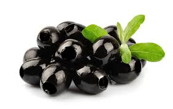

JESTES OLIWKAMI
 Oliwki to jeszcze bardziej love/hate niz brukselka
Albo jest siê fanem albo zacieklym wrogiem
Maja mocny, intensywny smak, mozna (trzeba) dodawac do pizzy
Osoby co siê nie znaj¹ mog¹ mówiæ ¿e masz komentarze nie na miejscu
Albo nie rozumiec twoich zartow, albo uwazac cie za niemila osobe
Ale w rzeczywistosci powinno sie byc dumnym z bycia oliwkami!
Oliwki to prawdziwe, superowe, cudowne warzywo! (z grecji)